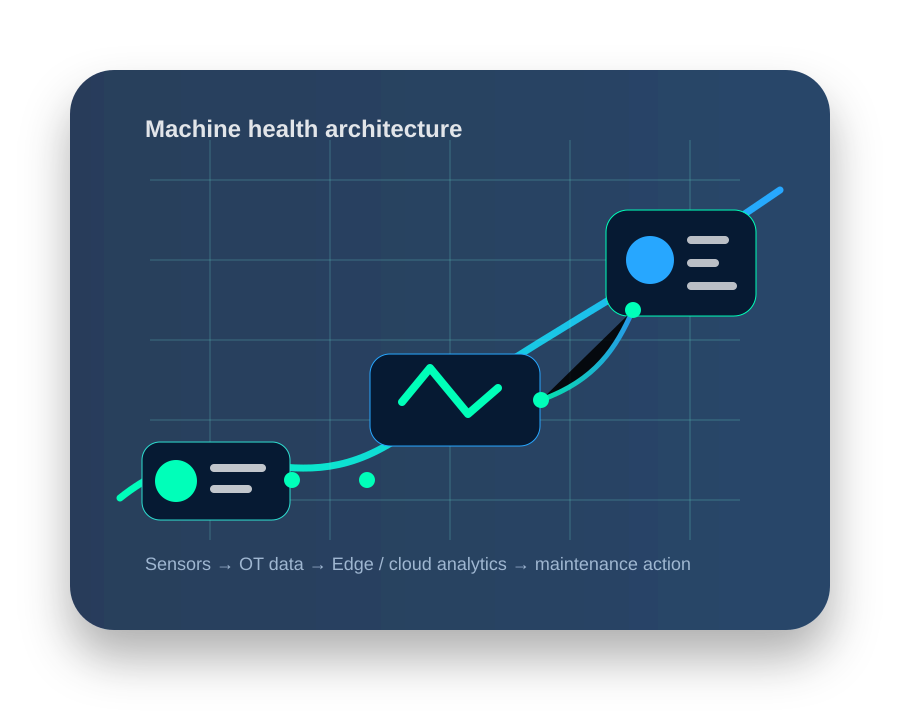
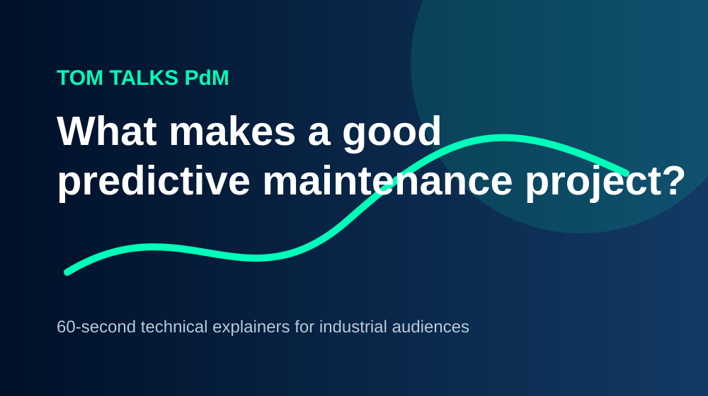

Problem first
Start with machine behaviour, production impact and maintenance reality — not software features.
Industrial AI • Mechanical understanding • OT architecture
I help manufacturers understand where predictive maintenance genuinely fits: the machinery, the failure modes, the sensor strategy, the automation architecture and the business case that makes the project worth doing.

Start with machine behaviour, production impact and maintenance reality — not software features.
Translate the customer environment into sensors, PLCs, gateways, historians, edge and cloud architecture.
Connect technical scope to downtime, risk, adoption, project maturity and operational value.
What I help with
This site is designed to show the thinking behind my work: how I support customers, explain complex technology simply, and help teams turn predictive maintenance from an isolated pilot into a repeatable capability.
Failure modes, rotating equipment, bearings, gearboxes, motors, pumps, fans, conveyors, hydraulics and production-critical machinery.
Choosing the right signal for the problem: vibration, temperature, current, pressure, flow, speed, runtime and process context.
Connecting the OT reality: PLCs, SCADA, historians, OPC UA, MQTT, edge devices, cloud platforms and maintenance workflows.
Helping customers move from alarm noise to prioritised action: asset health, risk, anomaly detection, trend detection and decision support.
Turning customer pain into a scoped solution, commercial story, technical architecture and adoption path that stakeholders can understand.
Building repeatable approaches across sites, asset types and maturity levels so PdM becomes a business capability, not a science project.
My operating model
The strongest predictive maintenance projects do not start with “which platform should we buy?” They start with the asset, the production consequence, the available data, and the people who need to act on the output.
Talk through your factory challengeUnderstand downtime, scrap, maintenance workload, safety risk, spares pressure and where reliability is hurting the business.
Clarify the asset hierarchy, critical components, operating conditions and the signals most likely to reveal degradation.
Define sensors, automation interfaces, connectivity, data quality, cybersecurity boundaries and integration with existing systems.
Start focused, prove usefulness, then standardise the approach across assets, lines, sites and maintenance routines.
Articles & technical notes
Before choosing analytics, understand what actually breaks, how it degrades, and which measurement can see it early enough to matter.
Read articleThe real project risk often sits between machine data, site networks, historians, edge devices and the people responsible for cybersecurity.
Read articleSuccessful PdM needs a commercial owner, a maintenance workflow, clear asset scope and a repeatable path from pilot to scale.
Read articleVideos, photos and field notes
Use this section for 60-second explainers, customer-facing walkthroughs, event photos, architecture sketches and practical lessons from maintenance and digitalisation projects.

Replace the placeholder link in assets/js/main.js with a YouTube or Vimeo embed URL.
Replace this with a professional photo or short on-site image.
About me
My background combines mechanical understanding, automation knowledge and commercial solution selling. I work best at the point where a customer has a real production problem, but the route to a digital solution is unclear.
I translate between maintenance teams, engineers, digitalisation leaders and sales stakeholders: what the machine is doing, what data is needed, what architecture is realistic, and how the project can create measurable value.
Contact
Send me a message with the asset type, the problem you are trying to solve and the current state of your data or automation architecture.